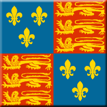

|

|
|
|
|
When England looks to the past for inspiration, one of the monarchs she holds in highest esteem is Henry V. His reputation has developed over the years in part based upon the biases of those who tell his story. In this unit we will examine the influences on the story of Henry V. We will also consider how those forces are at work today.
|
Part One
Biography and History
|
- Investigate the life of Henry V of England. What was he like before he became king? What was he like as a king? What family relationship existed between Henry V and Elizabeth I?
- Investigate the life of Charles VI of France. Is he considered a good king? What is he especially remembered for? What family relationship existed between Charles VI and Elizabeth I?
- Investigate the Battle of Agincourt. In what ways was the outcome of the battle affected by Henry's leadership? In what ways was the outcome affected by weather, geography, and technology?
|
Part Two
Shakespeare's Henry V
|
- Investigate the theatre in Elizabethan England, especially the financial relationship between Queen Elizabeth I and the Lord Chamberlain's men, Shakespeare's troupe of actors. How often did they produce a new play?
- Read Shakespeare's play, Henry V. Scholars traditionally classify this play as "history." Today we might call it a docudrama.
- Writing: What differences do you see between history and Shakespeare's depiction? What influences might account for the differences?
|
Part Three
Sir Laurence Olivier's Henry V
|
- Investigate the air raids on London during World War II. How did the English deal with the immediate physical threat and the constant emotional stress?
- Investigate the background to Sir Laurence Olivier's production of Henry V in 1944. In what ways did World War II influence the production?
- View the Olivier production of Henry V. Watch for subtle references to World War II. Note the attitude toward war.
- Writing: What influences might account for the differences between Shakespeare's text and Olivier's production?
|
Part Four
Kenneth Branagh's Henry V
|
- Investigate protests against the Vietnam War in the 1960s and the Falklands War in 1982. In what ways was that attitude different from the attitude toward World War II?
- View the Branagh production of Henry V. Note the attitude toward war.
- Writing: What influences might account for the differences between Shakespeare's text and Branaugh's production?
|
Part Five
The Story and the Storyteller Today
|
- Investigate focus groups. What comparisons do you see between focus groups of today and influences on Shakespeare, Olivier, and Branagh?
- In what ways are focus groups used in advertising, entertainment, and politics?
- In 2008 then-Senator Barack Obama, campaigning for the Democratic presidential nomination, gave a speech entitled "A More Perfect Union." To what extent might the content of that speech have been influenced by the controversial remarks of Obama's pastor (later his former pastor), Rev. Jeremiah Wright?
- Writing: The narrative is influenced by the narrator; the story is shaped by the forces that affect the storyteller. We are bombarded by narratives daily in the form of advertisements. What implications does this understanding have for the public as consumers and as citizens? What is our responsibility in the face of influence and manipulation?
|